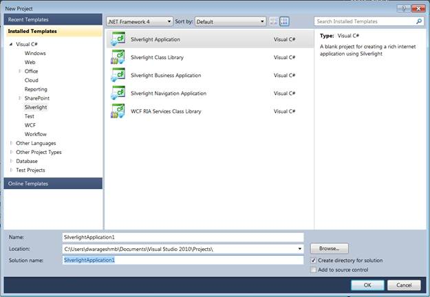
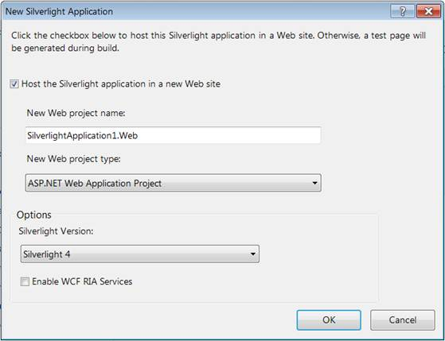
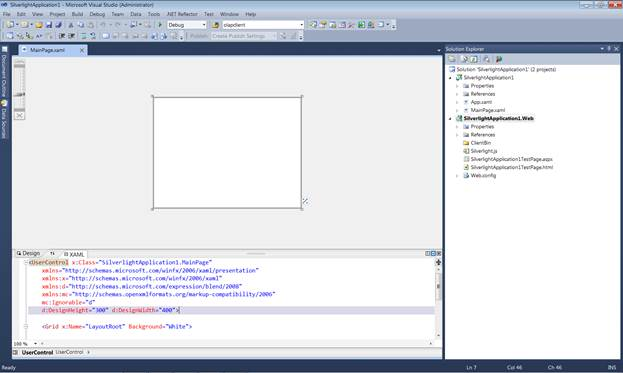
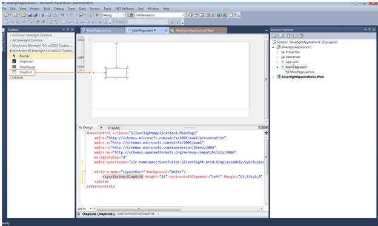
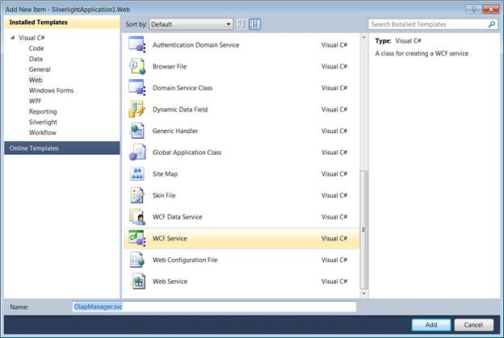
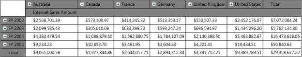

The steps to get started are as follows:
1. Click the Start menu, and then click Microsoft Visual Studio 2010.
2. From the File menu, click New Project. The New Project dialog box is displayed, as shown below.

Figure 5: New Project Dialog Box
3. Select the Silverlight Application by navigating to the Silverlight node and then click OK.
4. Host the Silverlight application on the Website.

Figure 6: Hosting Silverlight Application in Web
5. Click OK, to create a web project as well as a Silverlight project, as shown below.

Figure 7: Web and Silverlight Project
6. Drag and drop the OlapGrid from the toolbox to the MainPage.xaml.

Figure 8: OlapGrid in Designer Page
7. Add the following two assemblies as references to the web project:
· Syncfusion.Olap.Base
· Syncfusion.OlapSilverlight.BaseWrapper
8. Add a WCF Service to the Web project by right-clicking the Project -> Add New Item -> WCF Service. Then, name the Service as OlapManager and delete the IOlapManager.cs file as the service needs to be inherited with IOlapDataProvider.

Figure 9: Add New Item (WCF Service)
9. Inherit the newly added WCF service with the IOlapDataProvider and explicitly implement the IOlapDataProvider. The connection to the database is done with the help of the WCF service. The service has to be created and instantiated as described below.
The WCF Service has to implement the IOlapDataProvider interface and for implementing this interface, you require the OlapDataProvider, which can be instantiated by passing the connection string.
The code snippet is displayed below.
|
[C#] public class OlapManager : IOlapDataProvider { Syncfusion.OlapSilverlight.Manager.OlapDataProvider dataManager;
/// <summary> /// Initializes a new instance of the <see cref="OlapManager"/> class. /// </summary> public OlapManager() { string connectionString = "DataSource=localhost;Initial Catalog=Adventure Works DW"; // Instantiating the OlapDataProvider with Connection String dataManager = new OlapDataProvider(connectionString); }
#region IOlapDataProvider Members
/// <summary> /// Executing the CellSet by passing OlapReport /// </summary> /// <param name="report">The report.</param> /// <returns></returns> public Syncfusion.OlapSilverlight.Data.CellSet ExecuteOlapReport(Syncfusion.OlapSilverlight.Reports.OlapReport report) { Syncfusion.OlapSilverlight.Data.CellSet cellSet = this.dataManager.ExecuteOlapReport(report); // Closing the Provider Connection this.dataManager.DataProvider.CloseConnection(); return cellSet; }
/// <summary> /// Executing the CellSet by passing MDX Query /// </summary> /// <param name="mdxQuery">The MDX query.</param> /// <returns></returns> public Syncfusion.OlapSilverlight.Data.CellSet ExecuteMdxQuery(string mdxQuery) { Syncfusion.OlapSilverlight.Data.CellSet cellSet = this.dataManager.ExecuteMdxQuery(mdxQuery); // Closing the Provider Connection this.dataManager.DataProvider.CloseConnection(); return cellSet; }
public MemberCollection GetChildMembers(string memberUniqueName, string cubeName) { throw new NotImplementedException(); }
public CubeSchema GetCubeSchema(string cubeName) { throw new NotImplementedException(); }
public CubeInfoCollection GetCubes() { throw new NotImplementedException(); }
public MemberCollection GetLevelMembers(string levelUniqueName, string cubeName) { throw new NotImplementedException(); }
#endregion }
|
|
[VB]
Public Class OlapManager Implements IOlapDataProvider Private dataManager As Syncfusion.OlapSilverlight.Manager.OlapDataProvider
''' <summary> ''' Initializes a new instance of the <see cref="OlapManager"/> class. ''' </summary> Public Sub New() Dim connectionString As String = "DataSource=localhost;Initial Catalog=Adventure Works DW" ' Instantiating the OlapDataProvider with Connection String dataManager = New OlapDataProvider(connectionString) End Sub
#Region "IOlapDataProvider Members"
''' <summary> ''' Executing the CellSet by passing OlapReport ''' </summary> ''' <param name="report">The report.</param> ''' <returns></returns> Public Function ExecuteOlapReport(ByVal report As Syncfusion.OlapSilverlight.Reports.OlapReport) As Syncfusion.OlapSilverlight.Data.CellSet Dim cellSet As Syncfusion.OlapSilverlight.Data.CellSet = Me.dataManager.ExecuteOlapReport(report) ' Closing the Provider Connection Me.dataManager.DataProvider.CloseConnection() Return cellSet End Function
''' <summary> ''' Executing the CellSet by passing MDX Query ''' </summary> ''' <param name="mdxQuery">The MDX query.</param> ''' <returns></returns> Public Function ExecuteMdxQuery(ByVal mdxQuery As String) As Syncfusion.OlapSilverlight.Data.CellSet Dim cellSet As Syncfusion.OlapSilverlight.Data.CellSet = Me.dataManager.ExecuteMdxQuery(mdxQuery) ' Closing the Provider Connection Me.dataManager.DataProvider.CloseConnection() Return cellSet End Function
Public Function GetChildMembers(ByVal memberUniqueName As String, ByVal cubeName As String) As MemberCollection Throw New NotImplementedException() End Function
Public Function GetCubeSchema(ByVal cubeName As String) As CubeSchema Throw New NotImplementedException() End Function
Public Function GetCubes() As CubeInfoCollection Throw New NotImplementedException() End Function
Public Function GetLevelMembers(ByVal levelUniqueName As String, ByVal cubeName As String) As MemberCollection Throw New NotImplementedException() End Function
#End Region End Class
|
10. Include the Custom Binding and the Service endpoint address in the Web.Config file under the ServiceModel section.
|
[Web.Config]
<!--Binding--> <bindings> <customBinding> <binding name="binaryHttpBinding"> <binaryMessageEncoding/> <httpTransport maxReceivedMessageSize="2147483647"/> </binding> </bindings> <!—Endpoint Address--> <services> <service name="SilverlightApplication1.Web.OlapManager" > <endpoint address="binary" binding="customBinding" bindingConfiguration="binaryHttpBinding" contract="Syncfusion.OlapSilverlight.Manager.IOlapDataProvider"> </service> </services>
|
11. Add the System.ServiceModel assembly as a reference for the Silverlight project.
12. Add the following Namespace in MainPage.xaml.cs:
· System.ServiceModel
· System.ServiceModel.Channels
· Syncfusion.OlapSilverlight.Reports
· Syncfusion.Silverlight.Grid
· Syncfusion.OlapSilverlight.Manager
· Syncfusion.OlapSilverlight.Engine
13. Service instantiation in the Silverlight Project (MainPage.xaml.cs).
14. Declare IOlapDataProvider for Service instantiation.
|
[C#]
// Declaring the IOlapDataProvider for service instantiation
|
|
[VB]
' Declaring the IOlapDataProvider for service instantiation Dim DataProvider As IOlapDataProvider = Nothing
|
15. Specify the custom binding and instantiate the DataProvider from the ChannelFactory.
|
[C#]
private void InitializeConnection() System.ServiceModel.Channels.Binding customBinding = new CustomBinding(new BinaryMessageEncodingBindingElement(), new HttpTransportBindingElement { MaxReceivedMessageSize = 2147483647 }); EndpointAddress address = new EndpointAddress(new Uri(App.Current.Host.Source + "../../../../OlapManager.svc/binary")); ChannelFactory<IOlapDataProvider> clientChannel = new ChannelFactory<IOlapDataProvider>(customBinding, address);
|
|
[VB]
Private Sub InitializeConnection() Dim customBinding As System.ServiceModel.Channels.Binding = New CustomBinding(New BinaryMessageEncodingBindingElement(), New HttpTransportBindingElement With {.MaxReceivedMessageSize = 2147483647}) Dim address As EndpointAddress = New EndpointAddress(New Uri(App.Current.Host.Source & "../../../../OlapManager.svc/binary")) Dim clientChannel As ChannelFactory(Of IOlapDataProvider) = New ChannelFactory(Of IOlapDataProvider)(customBinding, address) DataProvider = clientChannel.CreateChannel() End Sub
|
16. Create the Report.
For creating reports there is a report object called OlapReport. OlapReport contains CategoricalItems, SeriesItems, SlicerItems, and FilterItems.
It is associated with the OlapDataManager as the currentreport property. When a report is set to the current report then an event is triggered and the control renders based on the current report that is set.
17. Data Binding of OlapGrid.
|
[C#]
private void MainPage_Loaded(object sender, RoutedEventArgs e)
|
|
[VB] Private Sub MainPage_Loaded(ByVal sender As Object, ByVal e As RoutedEventArgs) ' Initialize the service connection Me.InitializeConnection() ' Instantiating the OlapDataManager Dim m_OlapDataManager As OlapDataManager = New OlapDataManager() ' Specifying the DataProvider for OlapDataManager m_OlapDataManager.DataProvider = Me.DataProvider ' Set Current report for OlapDataManager m_OlapDataManager.SetCurrentReport(CreateOlapReport()) ' Specifying the OlapDataManager for OlapGrid Me.olapGrid1.OlapDataManager = m_OlapDataManager ' Data Binding Me.olapGrid1.DataBind() End Sub
|

Figure 10: OlapGrid Control with OLAP Data